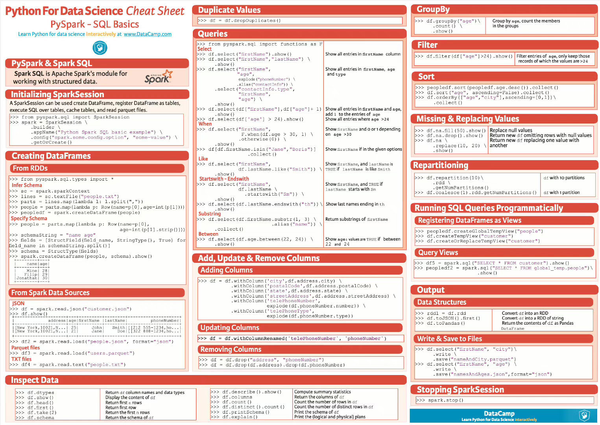

pyspark
先附图

Create RDD
dataList = ["java good", "Python awsome", "Scala good"]
rdd = spark.sparkContext.parallelize(dataList, 3)
getNumPartitions
获取分区数量
Repartition and Coalesce
reparRdd = rdd.repartition(4)
print("re-partition count:" + str(reparRdd.getNumPartitions()))
reparRdd2 = rdd.coalesce(2)
print("re-partition count:" + str(reparRdd2.getNumPartitions()))
RDD Transformations算子
flatMap
Map
reduceByKey
sortByKey
filter
RDD Actions算子
count
first
max
reduce
totalWordCount = rdd5.reduce(lambda a, b: (a[0] + b[0], a[1]))
print("dataReduce Record : " + str(totalWordCount))
take
Advantages of Persisting RDD
Cache
cachedRdd = rdd.cache()
# 默认Cache storage level `MEMORY_ONLY`
# 可选RDD Persist MEMORY_ONLY,MEMORY_AND_DISK, MEMORY_ONLY_SER, MEMORY_AND_DISK_SER, DISK_ONLY, MEMORY_ONLY_2,MEMORY_AND_DISK_2 and more.
# 指定不同的存储级别
dfPersist = rdd.persist(pyspark.StorageLevel.MEMORY_ONLY)
# 释放RDD的持久性，从而释放占用的内存。
rddPersist2 = dfPersist.unpersist()
Broadcast
Broadcast 是一种用于将大数据结构广播到集群中的所有节点以供任务使用的机制。这对于避免网络传输和提高性能非常有用，尤其是当你需要在多个任务中使用相同的数据时，例如在 join 操作中。 Broadcast 可以用于将只读的大数据结构（例如字典、集合、DataFrame 等）传播到各个节点，以避免将这些数据复制到每个任务的内存中。这可以减少网络传输和降低内存占用，从而提高性能。
Accumulators
用于在分布式计算中进行累积操作。Accumulator 通常用于在并行操作中累积结果，例如计数或总和，而不会引发竞争条件（race condition）。它们在多个任务中进行并行操作，然后将结果累积到单个变量中。 主要的用法是在 Spark 作业中创建一个 Accumulator，然后在不同的任务中累积值。这些值可以被所有任务读取，但只能被累积，不能被修改。
accumulator = spark.sparkContext.accumulator(0)
spark.sparkContext.parallelize([1, 2, 3]).foreach(lambda x: accumulator.add(x))
print(accumulator.value)
一些优化策略
遍历DataFrame的优化
import functools
from pyspark.sql import DataFrame
paths = get_file_paths()
# BAD: For loop
for path in paths:
df = spark.read.load(path)
df = fancy_transformations(df)
df.write.mode("append").saveAsTable("xyz")
# GOOD: functools.reduce
lazily_evaluated_reads = [spark.read.load(path) for path in paths]
lazily_evaluted_transforms = [fancy_transformations(df) for df in lazily_evaluated_reads]
unioned_df = functools.reduce(DataFrame.union, lazily_evaluted_transforms)
unioned_df.write.mode("append").saveAsTable("xyz")
读取文件
读取文件时,比如Parquet、JSON和ORC，hudi使用Parquet格式，理论上也适用，假设要读取10GB的数据，可使用以下计算要使用的资源：
spark默认读取单个分区的大小为128Mb，取决于：
- spark.sql.files.maxPartitionBytes:
用途: 这个参数用于控制 Spark SQL 在读取文件时，单个分区中最多可以包含的字节数。
默认值: 默认值为 128MB。
适用场景: 当 Spark 使用 SparkSession 读取文件数据源（如 Parquet、ORC、CSV 等）时，该参数会决定每个分区所读取的数据量。此参数对 Spark SQL 及 DataFrame API 相关的操作生效。
影响: 如果文件很大，那么 Spark 会将文件分成多个分区，每个分区最多会读取 spark.sql.files.maxPartitionBytes 大小的数据。这有助于避免单个分区数据过大，从而导致内存溢出。
- spark.files.maxPartitionBytes:
用途: 这个参数用于控制 Spark Core 在处理文件时，单个分区的最大字节数。
默认值: 这个参数默认值没有硬性规定，但如果使用的话，通常与 spark.sql.files.maxPartitionBytes 类似。
适用场景: 这个参数主要应用于 Spark Core 中，当你使用 sc.textFile 或其他文件读取操作时，控制每个分区的数据量。
影响: 类似于 spark.sql.files.maxPartitionBytes，但作用范围更广，适用于所有使用 Spark Core 直接读取文件的操作。
计算如下：
10GB = 10 * 1024Mb = 10240
分区数 = 10240 / 128 = 80
一般，建议一个执行器中有2-5个执行器核心，如果我们取一个执行器中的执行器核心数=4，那么执行器总数= 80/4 = 20
默认情况下，执行器核心的总内存应为默认分区内存的4倍,即4 * 128Mb = 512Mb，因此，执行器总内存 = 核心数512 = 4512 = 2GB
所以，读取10Gb的数据，理论上要达到最大并行，需要20个executors， 2Gb的executors memory
启动参数
archives
在 Spark 中，--archives 是一个用于指定需要分发到所有工作节点的归档文件（如 .zip、.tar.gz 等）的命令参数。通过 --archives 参数，你可以将这些归档文件解压并分发到每个执行器节点中，供作业使用。
作用：
- 分发文件：将指定的归档文件分发到集群的所有工作节点。
- 解压归档文件：这些归档文件会被自动解压到执行器的工作目录中，供作业使用。
使用场景：
- 依赖包或资源：如果你的 Spark 作业依赖一些外部库或者资源文件，这些库或者资源文件可以打包成归档文件，通过 --archives 选项分发和解压到每个工作节点上。
- 运行环境：如果你需要在每个节点上配置特定的运行环境（例如 Python 虚拟环境），可以将这些环境打包成归档文件，通过 --archives 分发到每个节点。
示例：
如果你使用 Conda 创建了一个虚拟环境，并希望在 Spark 集群上分发并使用该环境
# 创建环境
conda create -n pyspark_env_3.10 python=3.10 pyspark
# 打包环境
conda pack -n pyspark_env_3.10 -o pyspark_env_3.10.tar.gz
遇到报错：
CondaPackError:
Files managed by conda were found to have been deleted/overwritten in the
following packages:
- pip 24.2:
lib/python3.1/site-packages/pip-24.2.dist-info/AUTHORS.txt
lib/python3.1/site-packages/pip-24.2.dist-info/INSTALLER
lib/python3.1/site-packages/pip-24.2.dist-info/LICENSE.txt
+ 437 others
- pyspark 3.5.1:
lib/python3.1/site-packages/pyspark-3.5.1.dist-info/INSTALLER
lib/python3.1/site-packages/pyspark-3.5.1.dist-info/METADATA
lib/python3.1/site-packages/pyspark-3.5.1.dist-info/RECORD
+ 765 others
- pytz 2024.1:
lib/python3.1/site-packages/pytz-2024.1.dist-info/INSTALLER
lib/python3.1/site-packages/pytz-2024.1.dist-info/LICENSE.txt
lib/python3.1/site-packages/pytz-2024.1.dist-info/METADATA
+ 615 others
- python-dateutil 2.9.0:
lib/python3.1/site-packages/dateutil/__init__.py
lib/python3.1/site-packages/dateutil/_common.py
lib/python3.1/site-packages/dateutil/_version.py
+ 25 others
- python-tzdata 2024.1:
lib/python3.1/site-packages/tzdata-2024.1.dist-info/INSTALLER
lib/python3.1/site-packages/tzdata-2024.1.dist-info/LICENSE
lib/python3.1/site-packages/tzdata-2024.1.dist-info/LICENSE_APACHE
+ 632 others
- six 1.16.0:
lib/python3.1/site-packages/six-1.16.0.dist-info/INSTALLER
lib/python3.1/site-packages/six-1.16.0.dist-info/LICENSE
lib/python3.1/site-packages/six-1.16.0.dist-info/METADATA
+ 6 others
- setuptools 72.1.0:
lib/python3.1/site-packages/_distutils_hack/__init__.py
lib/python3.1/site-packages/_distutils_hack/override.py
lib/python3.1/site-packages/distutils-precedence.pth
+ 589 others
- py4j 0.10.9.7:
lib/python3.1/site-packages/py4j-0.10.9.7.dist-info/INSTALLER
lib/python3.1/site-packages/py4j-0.10.9.7.dist-info/LICENSE.txt
lib/python3.1/site-packages/py4j-0.10.9.7.dist-info/METADATA
+ 38 others
- wheel 0.44.0:
lib/python3.1/site-packages/wheel-0.44.0.dist-info/LICENSE.txt
lib/python3.1/site-packages/wheel-0.44.0.dist-info/METADATA
lib/python3.1/site-packages/wheel-0.44.0.dist-info/RECORD
+ 31 others
根据：https://stackoverflow.com/questions/69992742/conda-pack-condapackerror-files-managed-by-conda-were
错误原因可能是因为：镜像试图使用python3.10，而conda-pack将其解析为python3.1。而conda-pack0.7以上版本已经解决了这个bug
# 安装conda-pack0.7以上版本，这里是0.8
conda install conda-pack
# 使用conda-pack
conda-pack -n pyspark_env_3.10 -o pyspark_env_3.10.tar.gz
# 运行spark
spark-submit \
--archives pyspark_env_3.10.tar.gz#pyspark_env \
--master yarn \
--deploy-mode client \
--conf spark.yarn.appMasterEnv.PYSPARK_PYTHON=./pyspark_env/bin/python \
--conf spark.yarn.appMasterEnv.PYSPARK_DRIVER_PYTHON=./pyspark_env/bin/python \
--executor-memory 4G \
--executor-cores 2 \
--num-executors 6 \
--queue spark \
spark-3.2.1/job/read_hudi.py
# 也可上传hdfs
hadoop fs -put pyspark_env_3.10.tar.gz /spark-jobs/jar
spark-submit \
--archives hdfs:///spark-jobs/jar/pyspark_env_3.10.tar.gz#pyspark_env \
--master yarn \
--deploy-mode client \
--conf spark.yarn.appMasterEnv.PYSPARK_PYTHON=./pyspark_env/bin/python \
--conf spark.yarn.appMasterEnv.PYSPARK_DRIVER_PYTHON=./pyspark_env/bin/python \
--executor-memory 4G \
--executor-cores 2 \
--num-executors 6 \
--queue spark \
spark-3.2.1/job/read_hudi.py
spark常见问题：
问题一：
日志中出现：org.apache.spark.shuffle.MetadataFetchFailedException: Missing an output location for shuffle 0
原因分析：
shuffle分为shuffle write和shuffle read两部分。
shuffle write的分区数由上一阶段的RDD分区数控制，shuffle read的分区数则是由Spark提供的一些参数控制。
shuffle write可以简单理解为类似于saveAsLocalDiskFile的操作，将计算的中间结果按某种规则临时放到各个executor所在的本地磁盘上。
shuffle read的时候数据的分区数则是由spark提供的一些参数控制。可以想到的是，如果这个参数值设置的很小，同时shuffle read的量很大，那么将会导致一个task需要处理的数据非常大。结果导致JVM crash，从而导致取shuffle数据失败，同时executor也丢失了，看到Failed to connect to host的错误，也就是executor lost的意思。有时候即使不会导致JVM crash也会造成长时间的gc。
解决方案：
1、减少shuffle数据
主要从代码层面着手，可以将不必要的数据在shuffle前进行过滤，比如原始数据有20个字段，只要选取需要的字段进行处理即可，将会减少一定的shuffle数据。
2、修改分区
通过spark.sql.shuffle.partitions控制分区数，默认为200，根据shuffle的量以及计算的复杂度适当提高这个值，例如500。
3、增加失败的重试次数和重试的时间间隔
通过spark.shuffle.io.maxRetries控制重试次数，默认是3，可适当增加，例如10。
通过spark.shuffle.io.retryWait控制重试的时间间隔，默认是5s，可适当增加，例如10s。
4、提高executor的内存
在spark-submit提交任务时，适当提高executor的memory值，例如15G或者20G。
问题二： 日志中出现：Caused by: org.apache.spark.SparkException: Could not execute broadcast in 300 secs. You can increase the timeout for broadcasts via spark.sql.broadcastTimeout or disable broadcast join by setting spark.sql.autoBroadcastJoinThreshold to -1
原因分析：
从上述日志中可以看出在ShuffleMapStage阶段，也就是ShuffleRead阶段，在Driver在向各个Executor广播输入数据时候，出现了超时现象。
解决方案：
1、适当增加超时时间：spark.sql.broadcastTimeout=800
2、适当增加重试次数：spark.sql.broadcastMaxRetries=3
3、关闭广播变量join：set spark.sql.autoBroadcastJoinThreshold = -1
问题三： 日志中出现：org.apache.spark.sql.catalyst.parser.ParseException
原因分析：
spark在做sql转化时报错。
解决方案：
检查sql是否书写正确
问题四： 日志中出现：SparkException: Could not find CoarseGrainedScheduler
原因分析：
这是一个资源问题应该给任务分配更多的cores和executors，并且分配更多的内存。并且需要给RDD分配更多的分区
解决方案：
1、调大一下资源和cores和executers的数量
2、在配置资源中加入这句话也许能解决你的问题：
–conf spark.dynamicAllocation.enabled=false
问题五： 日志中出现：Exception in thread “main” java.lang.NoSuchMethodError: scala.collection.immutable.c o l o n coloncoloncolon.tl$1()Lscala/collection/immutable/List;
原因分析：
scala版本不一致问题
解决方案：
1、通过给spark任务指定相同版本的镜像
–conf spark.kubernetes.container.image=镜像地址
问题六： 日志中出现：org.apache.spark.SparkException: Job aborted due to stage failure: Total size of serialized results of 9478 tasks (1024.1 MiB) is bigger than spark.driver.maxResultSize (1024.0 MiB)
原因分析：
序列化结果集的大小超过了spark任务默认的最大结果集大小（默认spark.driver.maxResultSize为1g）
解决方案：
1、增加spark.driver.maxResultSize的大小
–conf spark.driver.maxResultSize=2g
问题七： 日志中出现：The executor with id 12 exited with exit code 137
原因分析：
executor内存溢出（oom）
解决方案：
1、增加executor内存
示例参数：–conf spark.executor.memory=10g
注：少部分情况为堆外内存（overhead memory）不足，需要增加堆外内存
示例参数：–conf spark.executor.memoryOverhead=5g
问题八： WARN TaskSetManager: Lost task 1.0 in stage 0.0 (TID 1, aa.local): ExecutorLostFailure (executor lost) WARN TaskSetManager: Lost task 69.2 in stage 7.0 (TID 1145, 192.168.47.217): java.io.IOException: Connection from /192.168.47.217:55483 closed java.util.concurrent.TimeoutException: Futures timed out after [120 second ERROR TransportChannelHandler: Connection to /192.168.47.212:35409 has been quiet for 120000 ms while there are outstanding requests. Assuming connection is dead; please adjust spark.network.timeout if this is wrong
原因分析：
TaskSetManager: Lost task & TimeoutException
因为网络或者gc的原因,worker或executor没有接收到executor或task的心跳反馈
解决方案：
1、提高 spark.network.timeout 的值，根据情况改成300(5min)或更高
2、配置所有网络传输的延时，如果没有主动设置以下参数，默认覆盖其属性
问题九： 日志中出现：java.lang.OutOfMemoryError: Not enough memory to build and broadcast
原因分析：
Driver 端OOM。
Driver 端的 OOM 逃不出 2 类病灶：
创建的数据集超过内存上限
收集的结果集超过内存上限
广播变量在创建的过程中，需要先把分布在所有 Executors 的数据分片拉取到 Driver 端，然后在 Driver 端构建广播变量，最后 Driver 端把封装好的广播变量再分发给各个 Executors。第一步的数据拉取其实就是用 collect 实现的。如果 Executors 中数据分片的总大小超过 Driver 端内存上限也会报 OOM。
解决方案：
增加driver端的内存大小
问题十： java.lang.OutOfMemoryError: Java heap space at java.util.Arrays.copyOf java.lang.OutOfMemoryError: Java heap space at java.lang.reflect.Array.newInstance
原因分析：
executor端OOM
User Memory 用于存储用户自定义的数据结构，如数组、列表、字典等。因此，如果这些数据结构的总大小超出了 User Memory 内存区域的上限，就会出现这样的报错。
问题十一： spark sql 执行insert overwrite的时候，出现数据重复。
原因分析：
Spark SQL在执行SQL的overwrite的时候并没有删除旧的的数据文件（Spark SQL生成的数据文件），Spark SQL写入Hive的流程如下：
1.Spark写入Hive会先生成一个临时的_temporary目录用于存储生成的数据文件，全部生成完毕后全部移动到输出目录，然后删除_temporary目录，最后创建Hive元数据（写分区）；
2.Spark写入数据任务使用了同一个_temporary目录，导致其中一个完成数据生成和移动到Hive路径之后删除_temporary目录失败（任务被kill掉了），进一步导致数据已经到了但是元数据没有创建。
3.上一个任务虽然生成了数据文件但是没有元数据，则后一个任务的overwrite找不到元数据因此无法删除Hive路径下的数据文件（第二个任务会任务目录下没有数据生成）
4.当最后一个执行完成的Spark插入任务结束后，此时Hive路径下已经移动过来多个任务的数据文件，由于已经没有正在执行的Spark写任务，因此删除_temporary目录成功，创建元数据成功，结果就是这个元数据对应了该Hive路径下所有版本的数据文件。
问题十二： Spark任务正常执行10分钟左右，但是偶尔会出现任务运行时间过长比如5个小时左右
原因分析：
通过spark ui看到spark任务的task运行都是在10分钟左右，有一个task运行时间达到了5.4h一直没有运行完成。
解决方案：
设置这个参数spark.speculation=true；
原理：在Spark中任务会以DAG图的方式并行执行，每个节点都会并行的运行在不同的executor中，但是有的任务可能执行很快，有的任务执行很慢，比如网络抖动、性能不同、数据倾斜等等。有的Task很慢就会成为整个任务的瓶颈，此时可以触发 推测执行 (speculative) 功能，为长时间的task重新启动一个task，哪个先完成就使用哪个的结果，并Kill掉另一个task。
问题十三： org.apache.spark.shuffle.FetchFailedException: The relative remote executor(Id: 21), which maintains the block data to fetch is dead.
原因分析：
资源不足导致executor没有心跳，driver就判定其丢失，就去连其他的executor，但其他的因为配置都一样，所以也连不上。重试n次后，就会报错
解决方案：
减少使用触发shuffle的操作，例如reduceByKey，从而减少使用内存
增大spark.network.timeout，从而允许有更多时间去等待心跳响应
增加spark.executor.cores，从而减少创建的Executor数量，使得总使用内存减少
同时增大spark.executor.memory，保证每个Executor有足够的可用内存
增大spark.shuffle.memoryFraction，默认为0.2(需要spark.memory.useLegacyMode配置为true，适用于1.5或更旧版本，已经deprecated)
例：
-conf spark.driver.memory=10g —conf spark.executor.cores=2 --conf spark.executor.memory=24g --conf spark.executor.memoryOverhead=4g --conf spark.default.parallelism=1500 --conf spark.sql.shuffle.partitions=1500 —conf spark.network.timeout=300
-conf spark.driver.memory=10g -conf spark.executor.cores=2 --conf spark.executor.memory=24g --conf spark.executor. memory开销=4g --conf spark.default.parallelism=1500 --conf spark.sql.shuffle.partitions=1500 -conf spark.network.timeout=300
问题十四： java.io.IOException: java.io.EOFException: Unexpected end of input stream
原因分析：
spark任务输入数据异常，spark任务读取gz格式压缩的csv文件时，由于存在异常数据发生报错。gz格式压缩的文件存在空数据
解决方案：
1.定位到异常数据清除即可
2.过滤异常数据直接写入
问题十五： Exception in thread “main” java.lang.NoSuchMethodError: scala.Predef$.refArrayOps([Ljava/lang/Object;)[Ljava/lang/Object;
原因分析：
scala版本不一致
解决方案：
更换 服务scala版本一致的镜像
问题十六： : java.lang.StackOverflowError at org.codehaus.janino.CodeContext.extract16BitValue(CodeContext.java:763) at org.codehaus.janino.CodeContext.flowAnalysis(CodeContext.java:600)
原因分析：
jvm堆栈溢出，一般来说，出现这个错误有可能是因为代码中出现了递归查询或者执行计划DAG太大了，在我的例子中，出现这个问题的原因是我使用for 循环 union了56个df，并且我的sql中有很多like语句的or语句（or的处理是递归，or非常多时，会发生大量的递归），这导致了我的执行计划非常大。
当SparkSQL的sql语句有成百上千的or关键字时，就可能会出现Driver端的JVM栈内存溢出。
通常的处理方式是将一条sql语句拆分为多条sql语句来执行，每条sql语句尽量保证100个以内的子句，一条sql语句的or关键字控制在100个以内，通常不会导致JVM栈内存溢出。
解决方案是：
1.
spark.driver.extraJavaOptions
spark.executor.extraJavaOptions
有关与这两个参数的用法可参考：
https://tsaiprabhanj.medium.com/spark-extrajavaoptions-2d8799ff9181
- 根据文章：
https://botkampa.medium.com/how-to-fix-java-lang-stackoverflow-when-training-your-ml-model-in-spark-d4db3ff6af37
可以使用checkpoint()或者cache()来减小DAG的大小。
以下是该文章的解决方法示例：spark = SparkSession.builder \ .appName("Confidence Model") \ .enableHiveSupport() \ .getOrCreate() # I told spark to use dir called `checkpoint` to # store checkpoints. sc = spark.sparkContext sc.setCheckpointDir('checkpoint') #... some other things # Feature engineering section # assuming lot more features to be computed and added here. # Or there are so many JOINs. window = Window.partitionBy('id') feature_profile_df = feature_profile_df\ .withColumn("crazy_logic_1", "crazy logics here")\ .withColumn("crazy_logic_2", "crazy logics here")\ .join(other_df, "id", "outer")\ #...lots of them coming here .withColumn("crazy_logic_1000", "crazy logics here")\ # I'm sure the DAG size is pretty big now. # add checkpoint here to consolidate the DAG size in the next step. feature_profile_df.checkpoint() # check the size of DAG # Use extended=True to appreciate the full length of physical plan feature_profile_df.explain(extended=True) # Now you can use the data to train model. # Without feature_profile_df.checkpoint() in line 22 # this may results in StackOverflow error. model = pipeline.fit(feature_profile_df)同时，文章指出把df转为rdd在转为df也是一种可以有效减少DAG的方法### This may cause Py4JJavaError: An error occurred while calling o1019.fit.: java.lang.StackOverflowError train_df = train_df.select(cols) train_df.cache() train_df.checkpoint() train_df.show(n=3, truncate=False, vertical=True) train_df.show（n=3，truncate=False，vertical=True） #... many cache() and .checkpoint() thingies in between, but not relevant to train_df at all model_pred = pipeline_pred.fit(train_df) ### However, the problem above can be resolved by just moving ### cache() and show() right before .fit() like this: train_df = train_df.select(cols) #... many cache() and .checkpoint() thingies in between, but not relevant to train_df at all #...许多cache（）和.checkpoint（）的东西在中间，但与train_df完全无关 train_df.cache() # Note that .checkpoint() is not even used here: train_df.show(n=3, truncate=False, vertical=True)
问题十七： ERROR CodeGenerator: failed to compile: org.codehaus.janino.InternalCompilerException: Compiling "GeneratedClass" in "generated.java": Code of method "processNext()V" of class "org.apache.spark.sql.catalyst.expressions.GeneratedClass$GeneratedIteratorForCodegenStage1" grows beyond 64 KB
原因分析：
此问题伴随着问题十六一起出现，原因在于使用Catalyst从使用DataFrame和Dataset的程序生成Java程序编译成Java字节码时，一个方法的字节码大小不能超过64 KB，这与Java类文件的限制相冲突。
解决方案为：
spark.sql.codegen.wholeStage= "false"
来源与：https://stackoverflow.com/questions/50891509/apache-spark-codegen-stage-grows-beyond-64-kb
问题十八： 关于spark web ui上的Locality_level:
PROCESS_LOCAL 进程本地化，表示 task 要计算的数据在同一个 Executor 中。
NODE_LOCAL 节点本地化，速度稍慢，因为数据需要在不同的进程之间传递或从文件中读取。分为两种情况，第一种：task 要计算的数据是在同一个 worker 的不同 Executor 进程中。第二种：task 要计算的数据是在同一个 worker 的磁盘上，或在 HDFS 上恰好有 block 在同一个节点上。如果 Spark 要计算的数据来源于 HDFSD 上，那么最好的本地化级别就是 NODE_LOCAL。
NO_PREF 没有最佳位置，数据从哪访问都一样快，不需要位置优先。比如 Spark SQL 从 Mysql 中读取数据。
RACK_LOCAL 机架本地化，数据在同一机架的不同节点上。需要通过网络传输数据以及文件 IO，比 NODE_LOCAL 慢。情况一：task 计算的数据在 worker2 的 EXecutor 中。情况二：task 计算的数据在 work2 的磁盘上。
ANY 跨机架，数据在非同一机架的网络上，速度最慢。
可以通过设置spark.locality.wait增加等待时间，默认是3S。
问题十九： df.show()显示不完整
解决方案：
使用 df.show(truncate=False) 来关闭值的截断行为，从而显示完整的值。但是需要注意,如果值实在太长,终端可能无法完整显示。
使用 df.show(truncate=False, vertical=True) 可以垂直显示 DataFrame,每行显示一个值。这种方式更适合显示超长字符串。